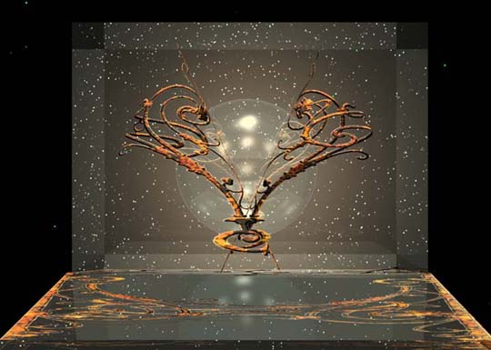
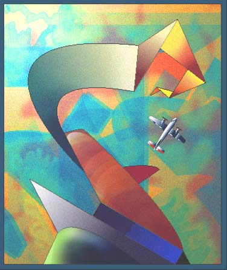
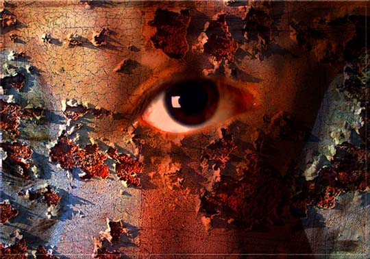
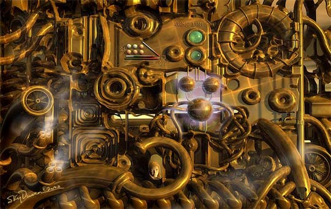
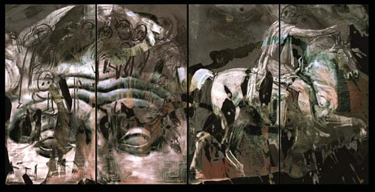
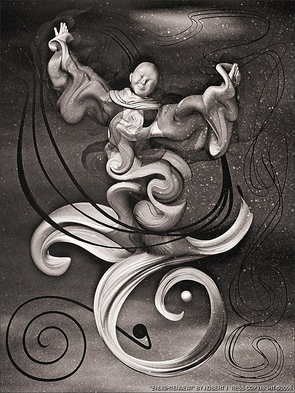
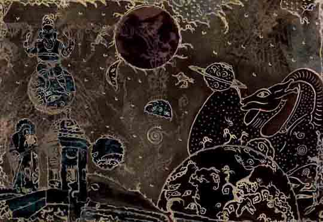
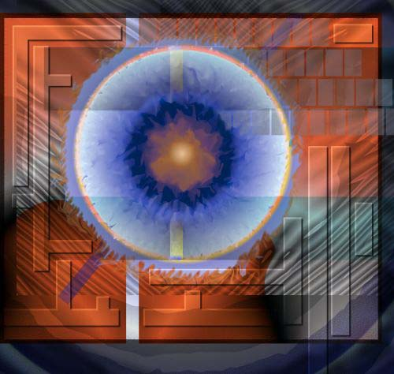

IMAGES OF THE DAY 90
12/11/2023 - 12/20/2023

12/11/2023
Mixed Technology
3D Abstract Art
Sculp
by Amichai Shavit
Click image to access artist's full exhibit

12/12/2023
Mixed Technology
Computer Abstractions
Terminal
by Steve Sherrell
Click image to access artist's full exhibit

12/13/2023
Mixed Technology
Abstract and Expressionistic
Eye in Back
by Siff Skovenborg
Click image to access artist's full exhibit

12/14/2023
Mixed Technology
Looking In
by Skydancer
Click image to access artist's full exhibit
12/15/2023
Mixed Technology
Digital Abstractions
Tribute to Pizza
by Barbara B. Stelluti
Click image to access artist's full exhibit


12/16/2023
Mixed Technology
Equestrian Series
Marcus Aurelius
by Alexander Sutulov
Click image to access artist's full exhibit

12/17/2023
Mixed Technology
Art of Interpretation
Enlightenment
by Robert J. Tiess
Click image to access artist's full exhibit
12/18/2023
Mixed Technology
Mixed Media Analog-Digital
Circle of Doshoku
by Takayoshi Ueda
Click image to access artist's full exhibit


12/19/2023
Mixed Technology
Lyric Abstraction
MO11
by Alain Valet
Click image to access artist's full exhibit

12/20/2023
Mixed Technology
The Fusion of Art and Technology
PanArch I
by Thomas Vilot
Click image to access artist's full exhibit
BACK TO IMAGES OF THE DAY 89
NEXT